Advance Tutorial 06: LookAt Behavior
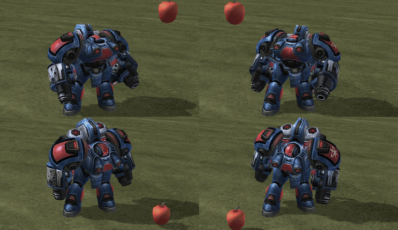In StarCraft II, the LookAt Behavior is mainly used in the Cutscene Editor to direct who or what a character is looking at in a scene. This Turret Behavior allows you to organize a subset of bones that will procedurally point in a direction. In this tutorial we’ll be setting up the Head and Chest of the Waterbat to look at an object in the Cutscene Editor.
Getting Started
-
Open 'Waterbat_LookAt_Tutorial01_Start.max'. It contains an animated Waterbat that we will be adding the LookAt behavior to.
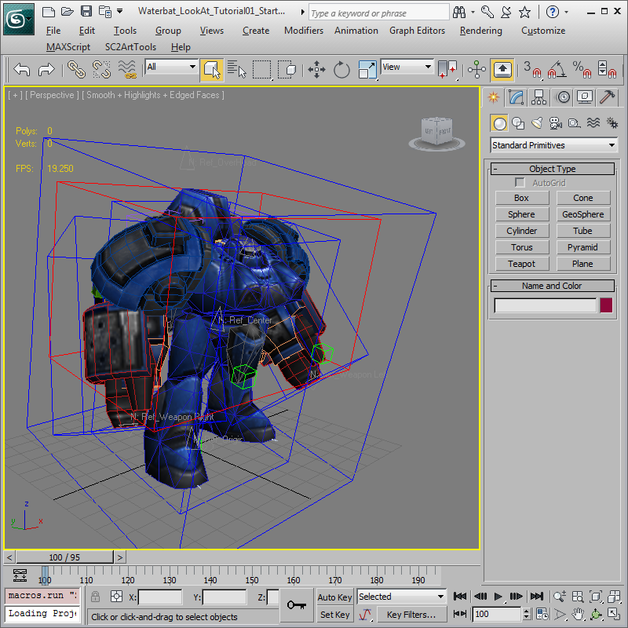
Create a Turret Behavior for the Head
The first thing that we are going to do is create a Turret Behavior for the Head. A Turret Behavior is a collection of bones that is assigned a manipulator to control their alignment.
-
Click SC2ArtTools > Behavior > Behavior Editor to open the Behavior Editor.
-
Once the Behavior Editor opens, click the 'Add a Turret Behavior' button (highlighted below) and rename the Turret Behavior to Head (also highlighted below).
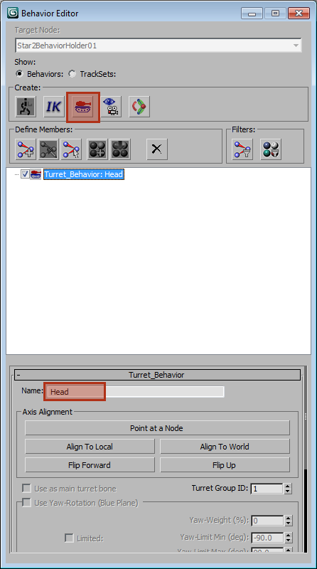
-
Select the Head bone in the viewport called 'BoneHead', once you’ve selected the Head bone, go back to the Behavior Editor and right-click on top of 'Turret_Behavior: Head' and click 'Add Bones From Viewport Selection'.
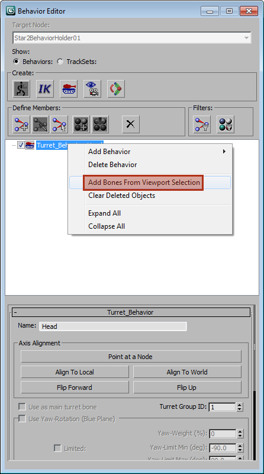
-
Now that we’ve added the Head bone, click on the '+' symbol that now appears next to 'Turret_Behavior: Head' and then select '1: Obj – Bone Geometry: BoneHead' (highlighted below).
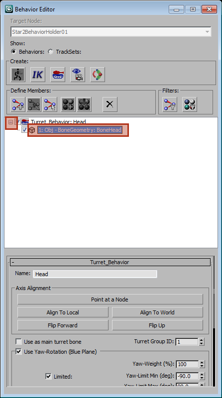
-
Once you have selected '1: Obj – Bone Geometry: BoneHead', press the 'Align To World' button and make sure to mark the checkbox for 'Use as main turret bone' (shown below).
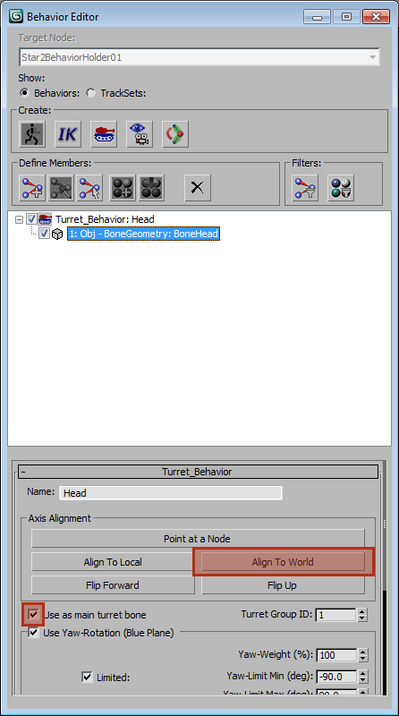
-
Once you’ve pressed the 'Align To World' button, the BoneHead_Axis indicator should look like the image below. Make sure that the T is on top, the L is on the left-hand side of the unit, and the F is facing the front.
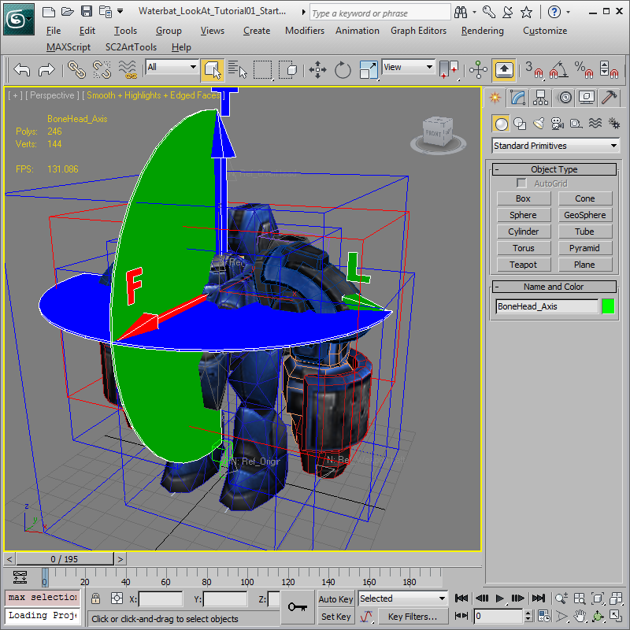
-
Now we’ll adjust the minimum and maximum limits for the Head yaw and pitch. We’ll keep the Yaw-Weight at 100% since there is only one bone in this Turret Behavior. Set the Yaw-Limit Min to -45.0 degrees and the Yaw-Limit Max to 45.0 degrees. This allows the Head to move up to 45 degrees to the right or the left. Then set the Pitch-Limit Min to -15.0 and the Pitch-Limit Max to 40.0. These are different so he can only look down a little, but he has a lot higher range when looking up.
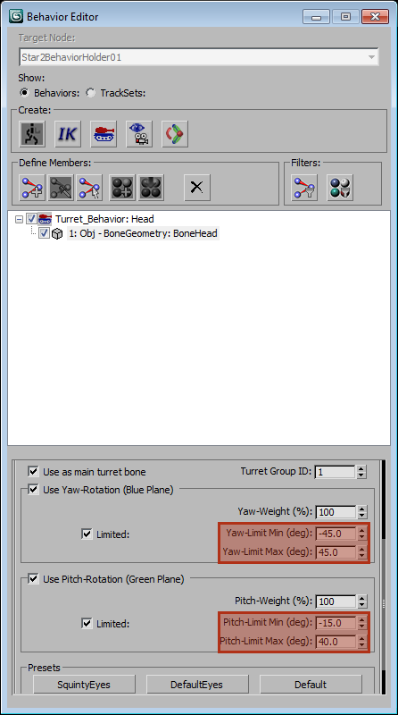
-
Now that the Head Turret Behavior is set up it should look like the image below.
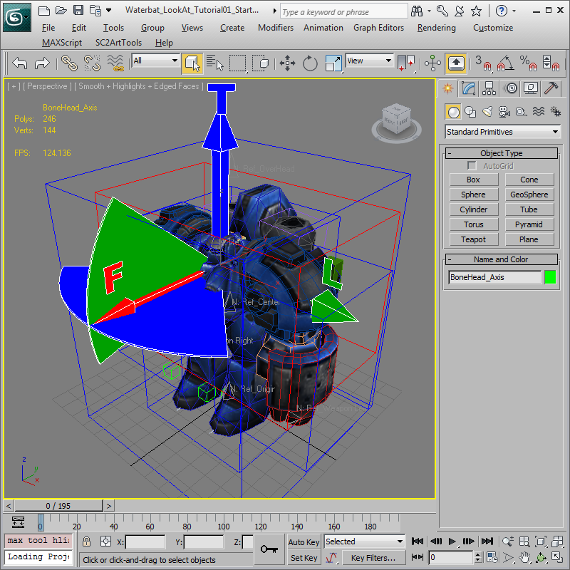
Add a Turret Behavior for the Chest
Now we’re going to create a Turret Behavior for the Chest that is similar to the Head setup, except the Chest will have 2 bones.
-
Go back to the Behavior Editor and click the 'Add a Turret Behavior' button again (highlighted below) and rename the new Turret Behavior to Chest (also highlighted below).
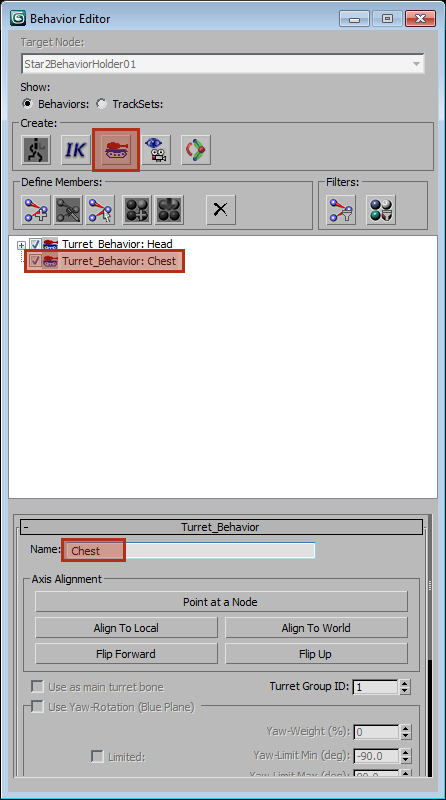
-
Select the two Chest bones in the viewport called 'BoneBack01' and 'BoneBack02', once you’ve selected the 2 Chest bones, go back to the Behavior Editor and right-click on top of 'Turret_Behavior: Chest' and click 'Add Bones From Viewport Selection'.
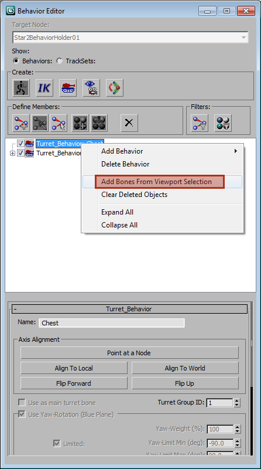
-
Now that we’ve added the 2 Chest bones, click on the '+' symbol that now appears next to 'Turret_Behavior: Chest' and then select '1: Obj – Bone Geometry: BoneBack01' (highlighted below).
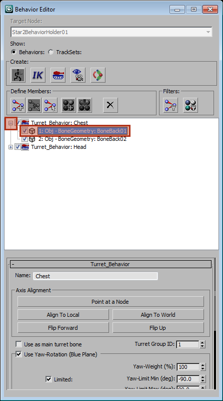
-
Now let’s adjust the minimum and maximum limits for BoneBack01 yaw and pitch. We’ll put the Yaw-Weight and the Pitch-Weight at 30% since we want the lower Chest bone to move less. Set the Yaw-Limit Min to -35.0 degrees and the Yaw-Limit Max to 35.0 degrees. This allows the lower Chest to move up to 35 degrees to the right or the left. Then set the Pitch-Limit Min to -20.0 and the Pitch-Limit Max to 20.0.
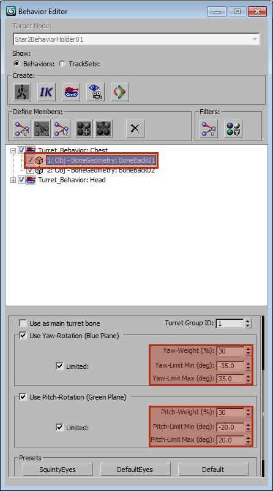
-
Now select '2: Obj – Bone Geometry: BoneBack02' to adjust the minimum and maximum limits for BoneBack02. We’ll put the Yaw-Weight at 70% since we want the upper Chest bone to move more than the lower one. Set the Yaw-Limit Min to -45.0 degrees and the Yaw-Limit Max to 45.0 degrees. This allows the upper Chest to move up to 45 degrees to the right or the left. Then set the Pitch-Limit Min to -30.0 and the Pitch-Limit Max to 30.0.
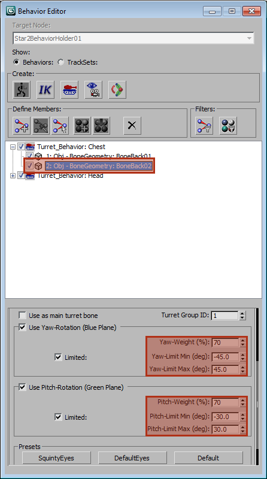
Test the LookAt Behavior in Previewer
-
Use 'SC2ArtTools > Export > Preview' to launch the Cutscene Editor to test the LookAt Behavior. When the Waterbat loads, it should be playing its 'Stand' animation.
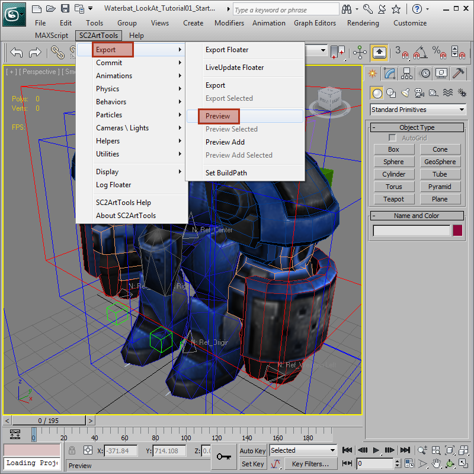
-
Now we're going to add an apple to the scene for the Waterbat to look at, but any model should work for this test. Search for the word 'Apple' in the Files Pane by typing it in and hitting Enter. Select the model named 'Shape Apple' and press the Add button. You should now see an apple in the middle of your scene. If you don’t see the Models Tab in the top left, then hit the F key on your keyboard to view the Files Pane.
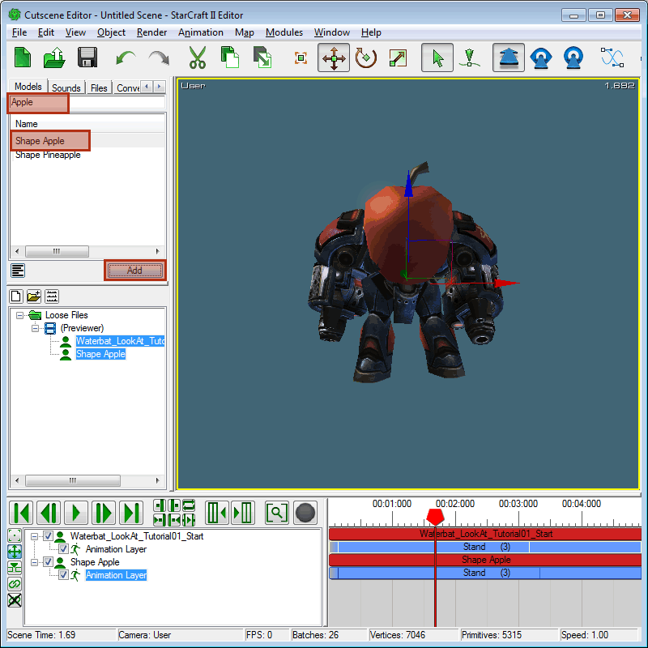
-
Put the animation timeline to zero by pressing the 'Move to Start' button (highlighted below). Now right-click on top of the Waterbat model in the Scene Object List and click LookAt... to assign a model to look at.
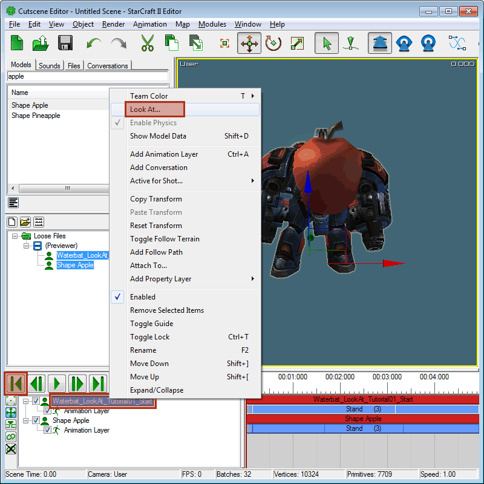
-
When the Look At Window pops up, select 'Shape Apple' from the top dropdown and press OK.
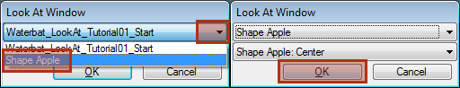
-
Right click on the purple timeline block that says 'Look At: Shape Apple Type:' and click on 'Look At Type > Instant Standing' (shown below).
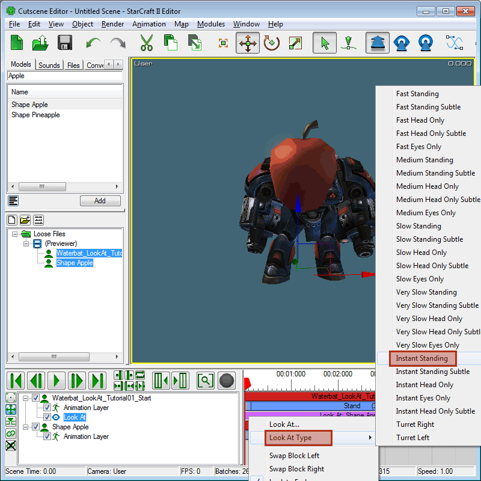
-
Select the apple and move it around the scene. The Waterbat’s Head should now be following the apple around.
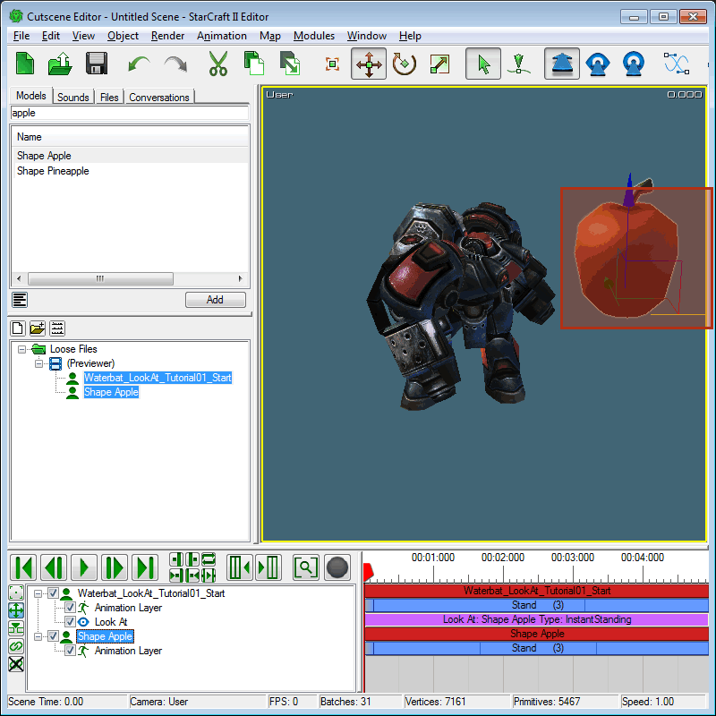
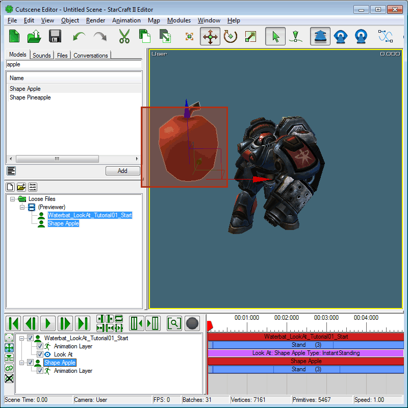